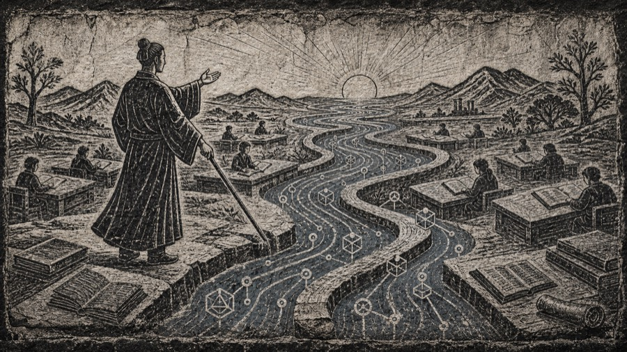

AI 教育专栏 · 双篇入口
两条线索，理解 AI 如何进入课堂与世界。
一篇从教育现场出发，把人工智能理解成正在流动的知识之水；另一篇沿技术史展开，从图灵测试走到智能体、空间智能与具身智能。

人工智能如水
当知识开始流动，教师怎样重新理解课堂、任务、智能体与教育实践。
打开文章→

从图灵测试到具身智能
沿 75 年技术接力赛，梳理 AI 如何从测试、模型、智能体走向物理世界。
打开文章→
AI 教育专栏 · 双篇入口
一篇从教育现场出发，把人工智能理解成正在流动的知识之水；另一篇沿技术史展开，从图灵测试走到智能体、空间智能与具身智能。

当知识开始流动，教师怎样重新理解课堂、任务、智能体与教育实践。
沿 75 年技术接力赛，梳理 AI 如何从测试、模型、智能体走向物理世界。